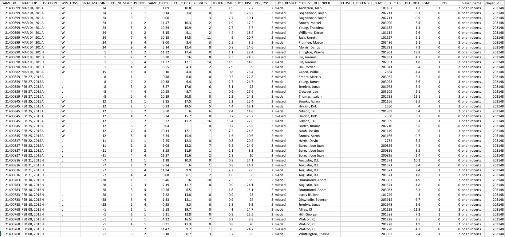
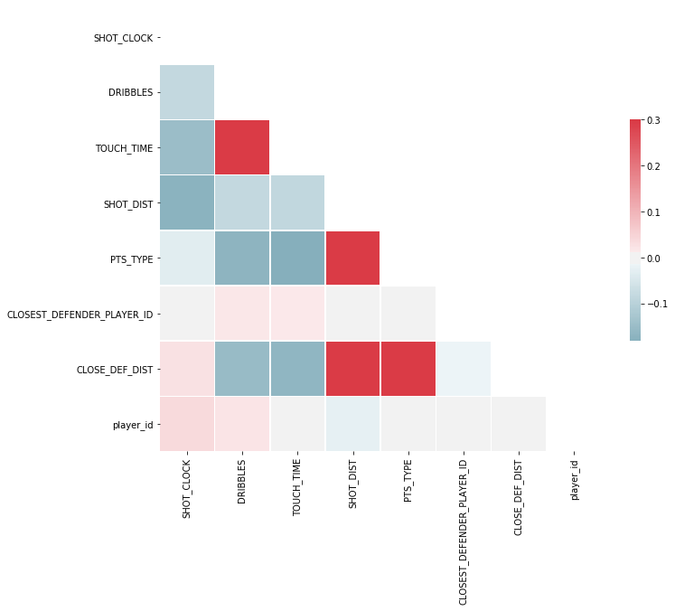

Basketball analysts have tried for the longest time to quantify what constitutes good defense. The most commonly tracked statistics do not properly determine when a player is playing good defense. This is because statistics like rebounds, assists, steals and blocks cannot quantify what is considered a good shot contest. The goal of this project is to look at factors that could be considered attributes for determining if a shot is made or not.
This dataset comes from https://www.kaggle.com/dansbecker/nba-shot-logs/data and includes a log of data on shots taken during the 2014-2015 NBA Regular Season. It includes information such as who took the shot, the time on the game and shot clock, how many dribbles were taken before the shot, how long the player held the ball, distance from the goal, the closest defender and the defender's name, as well as if the shot was actually made. Below is a screenshot of the type of data the dataset contains.
The goal was to take the list of attributes and try to determine what attributes are useful for predicting if a shot is made or not.
The dataset was cleaned and explored. Data visualizations as well as data quality concerns are addressed in the explore and data quality sections, respectively. Additionally, a number of machine learning models were fit on the selected attributes and used to determine if said attributes could be used for predictive modeling. The dataset comes with 21 unique features. A number of qualitative features were not taken into consideration as they do not relate to a specific instance of a jump shot. These include: GAME_ID, MATCHUP, LOCATION, W/L, FINAL_MARGIN, SHOT_NUMBER, and PERIOD. The remaining quantititative features taken into consideration include: GAME_CLOCK, SHOT_CLOCK, DRIBBLES, TOUCH_TIME, SHOT_DIST, PTS_TYPE, and CLOSEST_DEFENDER_DISTANCE. Additionally, we looked at the individual player taking the shot as well as the closest defender. The dataset also includes the target column: whether the shot was made or missed. A correlation analysis was run first on the selected quantitative attributes to determine attributes that were heavily correlated. As expected, dribbles and touch time are highly correlated (a player tends to hold the ball longer if he's taking more dribbles). Additionally, shot distance and points type are also correlated (3 point shots are farther out). An interesting correlation was shot distance and close defender distance. This seems to indicate that shot contests are less heavy the farther out the shooter is. This makes sense as it may be harder for players to close out on three point shooters versus players shooting at or near the rim.
Point type was taken out of the machine learning models as this is somewhat already taken care of by shot distance. The models were run with both touch time and dribbles as well as one over the other and we noted no real differences in results. Player_id was also not used in the models as there are simply too many players to turn this into a categorical variable. For the purposes of this project, we wanted to focus on the strictly measurable statisitics that influence shot making. Obviously, other factors such as the defender, attributes of the defender, and the player taking the shot will also influence shot making, but these factors are not considered in the models that were run.